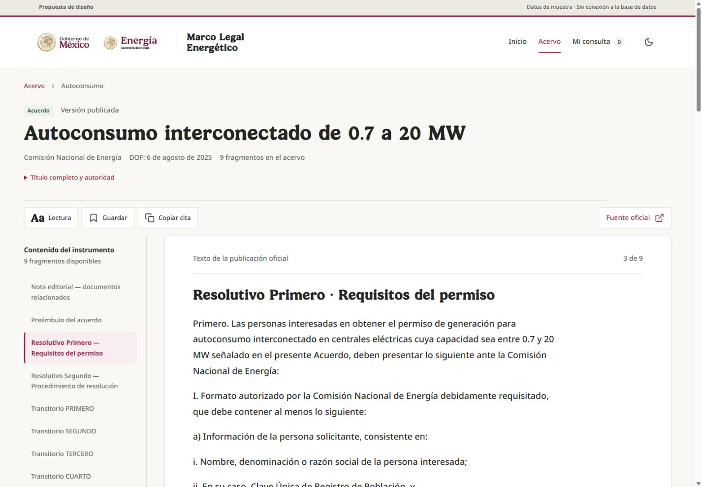
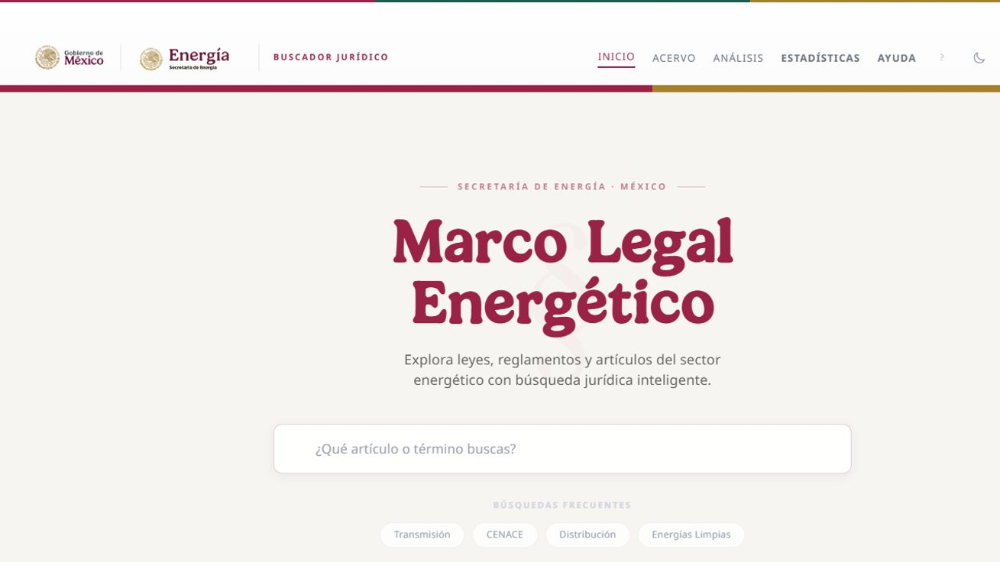
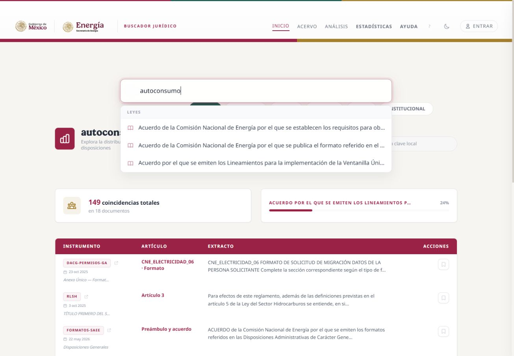
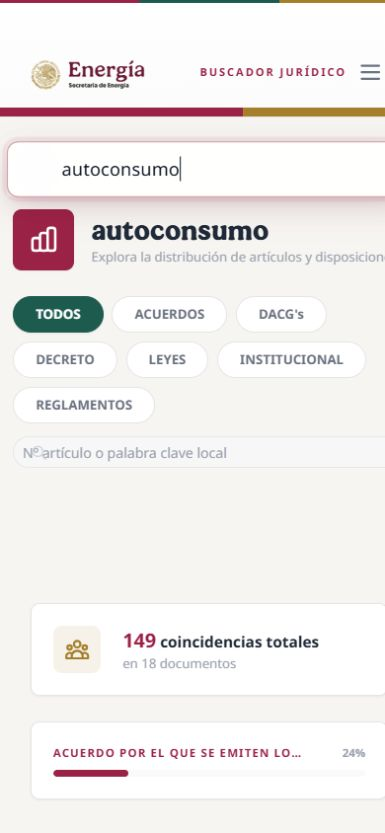
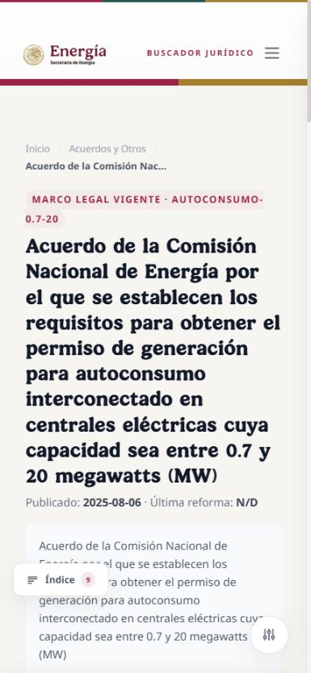
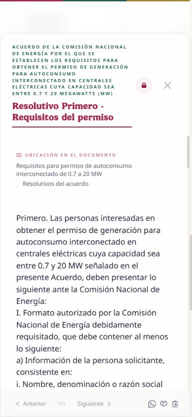
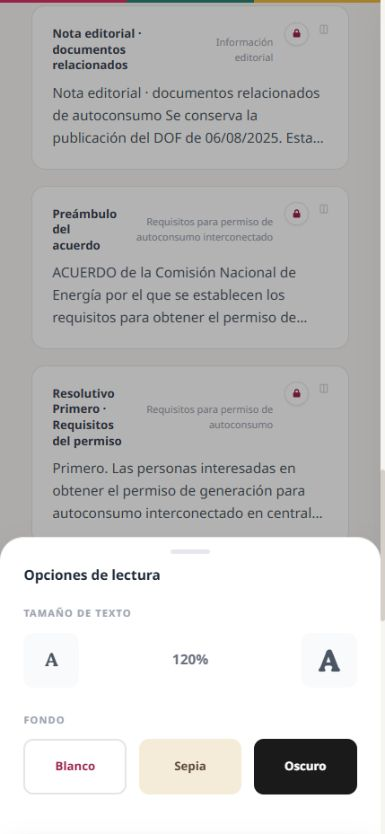

Buscar con contexto
Una entrada clara, acceso al acervo y colecciones útiles. La portada invita a consultar.
Ver inicioBuscador jurídico SENER
La siguiente etapa es hacer que buscar, encontrar y leer se sientan parte de una misma herramienta: clara, cómoda y rigurosa en cualquier pantalla.
Una mesa de consulta con identidad institucional.
El índice acompaña la lectura. La fuente permanece visible. El tamaño del texto responde al usuario y el contenido se adapta al espacio disponible.

Una entrada clara, acceso al acervo y colecciones útiles. La portada invita a consultar.
Ver inicioTítulo de consulta, coincidencia, unidad normativa y fecha en una jerarquía legible.
Ver resultadosTexto ajustable, índice cercano, fuente oficial y acciones previsibles, también en móvil.
Ver lectorGuinda para la acción principal, verde para orientación y dorado para detalles. Logos oficiales, superficies sobrias y espacio suficiente.
Lectura con carácter.
Patria Bold en títulos.
Noto Sans en interfaz y lectura.
Texto de lectura inicial de 18 px, ajustable entre 16 y 24 px; interlineado y ancho de línea controlados. Fuentes locales.
Función añadida al plan a petición del usuario: al seleccionar un artículo, resolutivo, transitorio o anexo, el documento original irá a su ubicación vinculada.
Dos paneles cuando haya espacio, con índice plegable. Seleccionar una unidad lleva el original a su página; resaltado cuando existan coordenadas verificadas.
Selector «Texto / PDF original» que conserva la unidad elegida y la posición al regresar. Cada documento aprovecha el ancho disponible.
Vincular página y versión del documento. Cuando falte una ubicación, indicarlo y mantener el acceso al original.
Ampliación de la entrega 3; todavía no implementada en el prototipo. Reservar 2–4 jornadas adicionales al plan base para integrar el visor; completar el mapeo del acervo se estima por separado. Ver alcance y criterios de aceptación.
La mejora también abarca estadísticas y Planeación Vinculante: aprovechar lo existente y actualizar su contenido a partir de los hallazgos revisados del radar diario.
Línea de tiempo de publicaciones e incorporaciones; mapa de relaciones; composición del acervo y matriz temática cuando existan metadatos suficientes. Cada gráfico abre los documentos que representa.
Temas Transversales se convierte en un explorador parametrizable: conceptos como Planeación Vinculante e instrumentos como PLADESE comparten fichas, relaciones documentadas y vistas de árbol, red o lista. Añadir temas será una operación de datos, sin programar una pantalla por tema.
Radar → cotejo de inventario → propuesta de cambio → revisión → publicación. Las ingestas conservan la validación documento por documento; fichas y cifras se actualizan desde los datos aprobados.
Primero se propone una línea de tiempo y un diagrama de planeación, aprovechando D3. En móvil, las relaciones también se podrán recorrer como lista. Las fechas y los conteos procederán de datos reales, con acceso a sus fuentes.
Ampliación del plan; los mockups de estadísticas y fichas, la integración con el radar y su estimación quedan como próxima entrega. El prototipo actual muestra inicio, resultados y lector. Ver propuesta completa y criterios de aceptación.
Lo comprobamos en el navegador. Al subir de 100% a 120%, sólo cambia el tamaño del contenedor. El párrafo conserva su tamaño fijo.
La primera entrega debe corregir la herencia tipográfica y hacer que la preferencia acompañe al usuario entre instrumentos y en el lector.
Medición del 19 de septiembre. Ver evidencia.

Identidad reconocible. Oportunidad de acercar acervo y tareas frecuentes.

Las sugerencias se superponen; los títulos y extractos compiten con los resúmenes.

Filtros y resúmenes ocupan la primera pantalla antes de las coincidencias.

El nombre oficial largo ocupa gran parte de la pantalla y vuelve a mostrarse.

La cabecera extensa y el modal dejan menos espacio para el texto.

El tamaño real del párrafo permanece igual aunque cambie el indicador.
Capturas de esta revisión. El diagnóstico se limita al recorrido observado y al código inspeccionado; no declara cumplimiento completo de accesibilidad. Hallazgos técnicos con referencias.
Cada etapa se puede revisar y revertir.
Se mantiene la SPA actual, sus eventos y su conexión a Supabase. No hace falta reescribir el buscador para conseguir esta mejora.
Preferencias de lectura compartidas, tokens consistentes, foco y teclado, scroll correcto y nombres de controles.
Cierre: Aa cambia párrafos y celdas, persiste al navegar y no rompe los controles.
Cabecera, búsqueda, lista responsiva, filtros accesibles y estado conservado al volver de un resultado.
Cierre: buscar, filtrar, abrir y volver conserva la consulta y la posición.
Índice semántico, título oficial disponible, lector adaptable, anexos y tablas. Presentación y análisis como herramientas complementarias.
Cierre: leyes, acuerdos y formularios conservan todo su texto, estructura y enlaces.
Carga, vacío, error, modo oscuro, notas, favoritos, comparación, estadísticas, impresión y gestor.
Cierre: las funciones actuales mantienen su acceso, permisos y respuestas claras.
Regresión, teclado, zoom, pantallas, navegadores y vista previa de Cloudflare.
Cierre: pruebas y build correctos, revisión visual y consulta pública verificada.
Estimación orientativa: 10–14 jornadas después de acordar la dirección; sujeta a hallazgos y alcance. El plan completo detalla archivos, riesgos y criterios de aceptación.
| Pantalla disponible | Comportamiento previsto | Qué se verifica |
|---|---|---|
| 320–479 px | Una columna; filtros e índice en panel; lector completo. | Títulos largos, botones táctiles, Aa grande y cero contenido inaccesible. |
| 480–767 px | Una columna amplia y herramientas que se acomodan en filas. | Sin columnas forzadas ni etiquetas cortadas. |
| 768–1023 px | Paneles plegables según el espacio real. | Vertical/horizontal y teclado virtual. |
| 1024–1439 px | Filtros o índice lateral; texto con ancho de lectura controlado. | Navegación con teclado y regreso a resultados. |
| 1440–2560+ px | Contenido centrado; el texto no se estira indefinidamente. | Zoom y equilibrio de columnas. |
| Poca altura | Cabecera compacta, altura dinámica y zonas seguras. | Las barras no tapan el documento. |
También se probarán zoom al 200%, reflow a 320 px, modo oscuro, tablas extensas y dispositivos reales. Las tablas jurídicas tendrán su propia región desplazable; su estructura se conserva.
Objetivo de accesibilidad: WCAG 2.2 AA. Referencias de W3C: reflow, tamaño de texto y tamaño de controles. Las pruebas del prototipo no equivalen a certificación de toda la aplicación.
Primero corregir Aa y los fundamentos responsivos. Después llevar esta dirección al inicio, los resultados y el lector. El acabado premium vendrá de la coherencia y del cuidado de cada interacción.
Probar la propuesta{kind=link}
{kind=link}
{kind=link}
{kind=link}
{kind=link}
{kind=link}